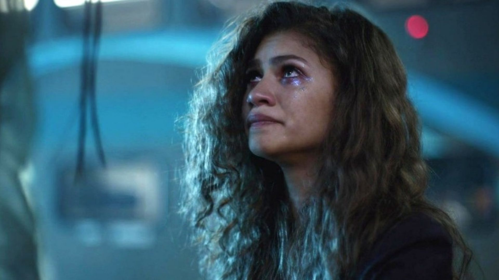

CODE NEWS


Os desafios criados pelas pessoas que usam o TikTok estão cada vez mais frequentes. Porém o que ninguém contava é que uma série deles são perigosos, na qual podem ser até fatal. Não podemos negar que as crianças hoje em dia estão expostas a internet e com isso acessam sites e aplicativos sem o conhecimento dos pais. No entanto, um novo desafio criado na plataforma está chamando a atenção das autoridades, pais, e professores.
Chamado de “Desafio Euphoria”, em referência à série da HBO, a “trend” consiste em raspar pó de corretivo e inalar, simulando o uso de cocaína. Vídeos de alunos fazendo o desafio são facilmente encontrados em diferentes redes, mas são mais comuns no TikTok. A maior parte deles são gravados durante intervalos ou nos banheiros das escolas, porém, existem até clipes gravados dentro de salas de aula.
De acordo com médicos ouvidos pelo portal G1, a inalação de corretivo pode causar danos às mucosas e agravar casos de doenças inflamatórias das vias aéreas, como rinite e sinusite. Além disso, existe o risco de algum tipo de intoxicação pelo produto. O "desafio Euphoria" tem sido bastante reprimido por autoridades da educação, levando a suspensões, expulsões e até a solicitação da presença de policiais nas escolas. Até o momento, foram registrados casos de punições nos estados de São Paulo, Paraná e Santa Catarina.
Mesmo com a faixa etária 18+ a série Euphoria que inspirou o desafio tem feito bastante sucesso entre os adolescentes das escolas. Recentemente, reportamos sobre a DARE, ou Drug Abuse Resistance Education, condenando publicamente a série pela forma como ela transmite mensagens de jovens e suas lutas com sexo e abuso de substâncias.
“É lamentável que a HBO, a mídia social, os revisores de programas de televisão e a publicidade paga tenham escolhido se referir ao programa como "inovador", em vez de reconhecer as possíveis consequências negativas em crianças em idade escolar que hoje enfrentam riscos incomparáveis e desafios de saúde mental. “, afirmou a organização. Apesar da controvérsia, Euphoria vem quebrando recordes de audiência e já foi renovada para uma terceira temporada pela HBO.